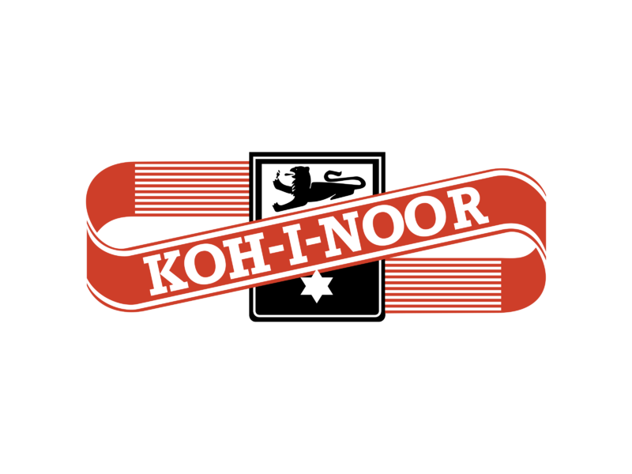
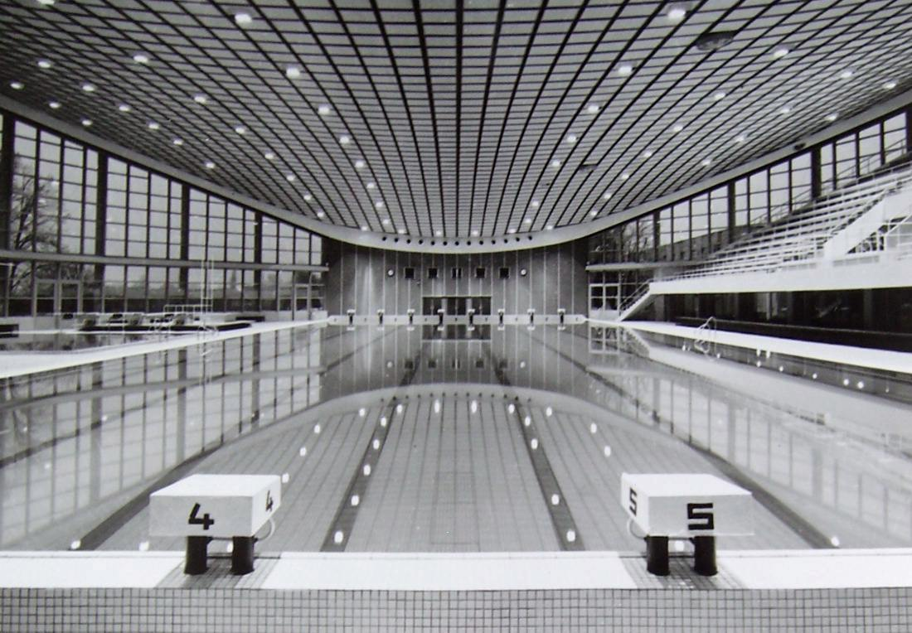
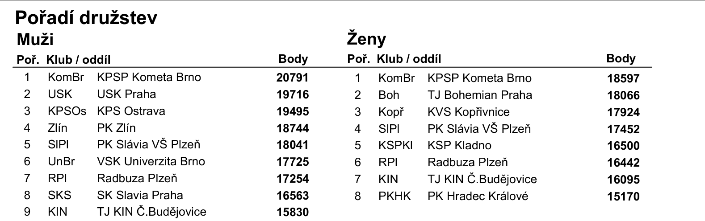
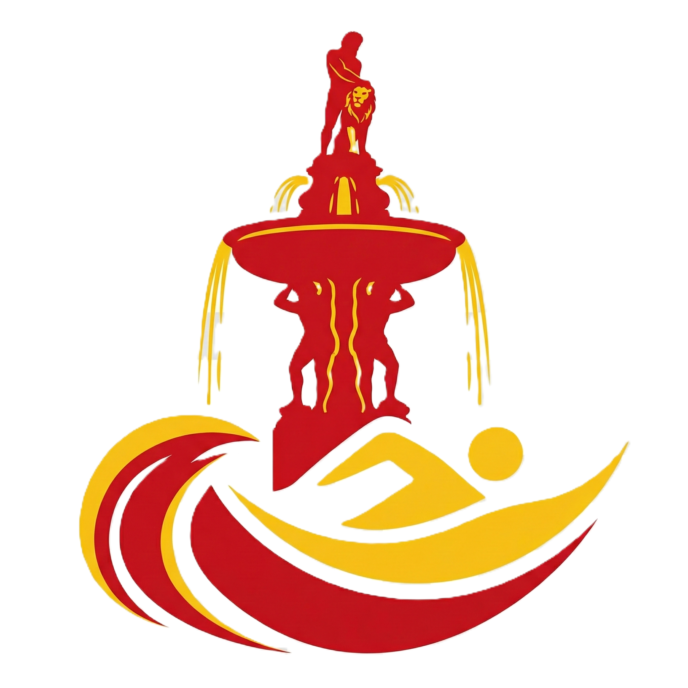

Naše historie
Příběh psaný vodou od roku 1951
Příběh psaný vodou od roku 1951
Podívejte se na klíčové okamžiky, které formovaly náš klub do dnešní podoby.

Pod vedením Vlasty Potužníkové vzniká nový plavecký oddíl z učňů n. p. Koh-i-noor a žaček Matice školské.

Po 20ti letech snahy se díky Dr. Ing. Josefu Potužníkovi otevírá nová krytá plovárna. Svého času nejmodernější plavecký areál ve Střední Evropě
Postup mužského a ženského týmu do 1. celostátní Federální ligy
Eva Šmausová poprvé zvolena předsedkyní nejprve plaveckých sportů, aby pak následně byla zvolená předsedkyní celé TJ.
Předsedkyní Tělovýchovné jednoty je dodnes

Březinová Eva (1987), Dušková Petra (1971), Dvořáková Tereza (1987), Hájková Aneta (1989), Hradilová Naďa (1987), Chlupová Šárka (1990), Marková Miroslava (1987), Palečková Andrea (1991), Reitingerová Zuzana (1991), Tunková Kateřina (1992), Vondrášková Lucie (1991)
Baloun Karel (1990), Filip Jiří (1975), Jachno Lukáš (1988), Pech Martin (1990), Plass Jakub (1988), Pytel Filip (1989), Rus Jan (1989), Schuster Jan (1990), Sommer Jan (1990), Šimek Jan (1986)

Spouštíme nové webové stránky a digitální komunikaci pro rodiče a členy!
Zajímají vás detaily? Prohlédněte si původní dokumenty, ze kterých jsme čerpali.